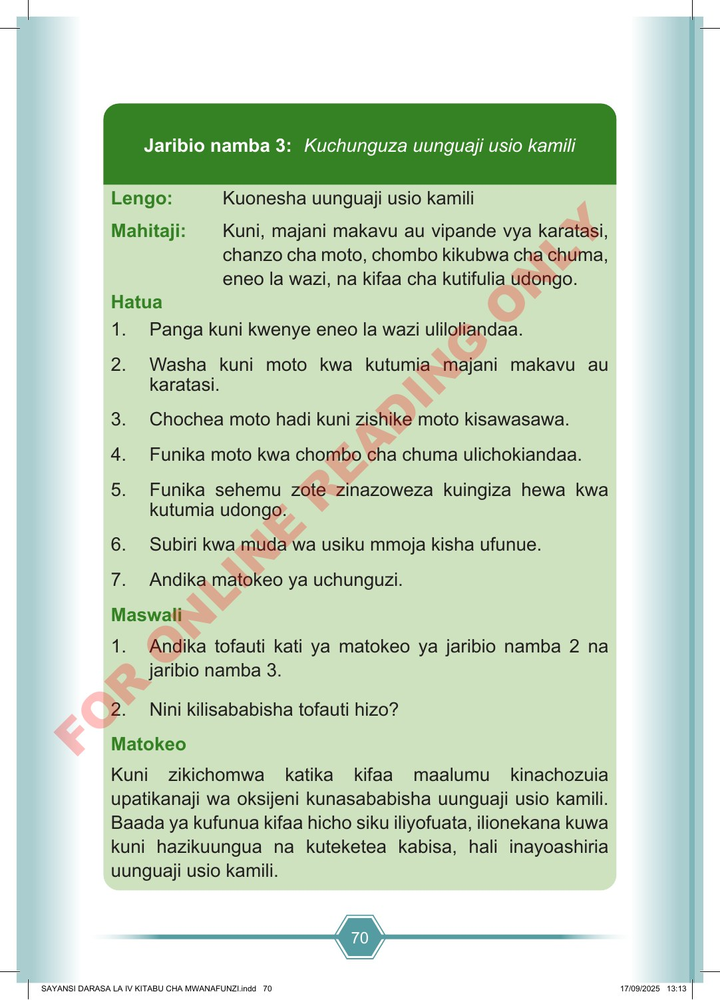

70 Lengo: Kuonesha uunguaji usio kamili Mahitaji: Kuni, majani makavu au vipande vya karatasi, chanzo cha moto, chombo kikubwa cha chuma, eneo la wazi, na kifaa cha kutifulia udongo. Hatua 1. Panga kuni kwenye eneo la wazi uliloliandaa. 2. Washa kuni moto kwa kutumia majani makavu au karatasi. 3. Chochea moto hadi kuni zishike moto kisawasawa. 4. Funika moto kwa chombo cha chuma ulichokiandaa. 5. Funika sehemu zote zinazoweza kuingiza hewa kwa kutumia udongo. 6. Subiri kwa muda wa usiku mmoja kisha ufunue. 7. Andika matokeo ya uchunguzi. Maswali 1. Andika tofauti kati ya matokeo ya jaribio namba 2 na jaribio namba 3. 2. Nini kilisababisha tofauti hizo? Matokeo Kuni zikichomwa katika kifaa maalumu kinachozuia upatikanaji wa oksijeni kunasababisha uunguaji usio kamili. Baada ya kufunua kifaa hicho siku iliyofuata, ilionekana kuwa kuni hazikuungua na kuteketea kabisa, hali inayoashiria uunguaji usio kamili. Jaribio namba 3: Kuchunguza uunguaji usio kamili SAYANSI DARASA LA IV KITABU CHA MWANAFUNZI.indd 70 SAYANSI DARASA LA IV KITABU CHA MWANAFUNZI.indd 70 17/09/2025 13:13 17/09/2025 13:13 F O R O N L I N E R E A D I N G O N L Y